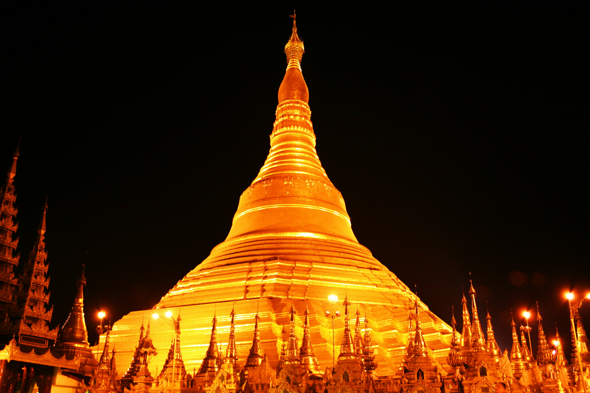
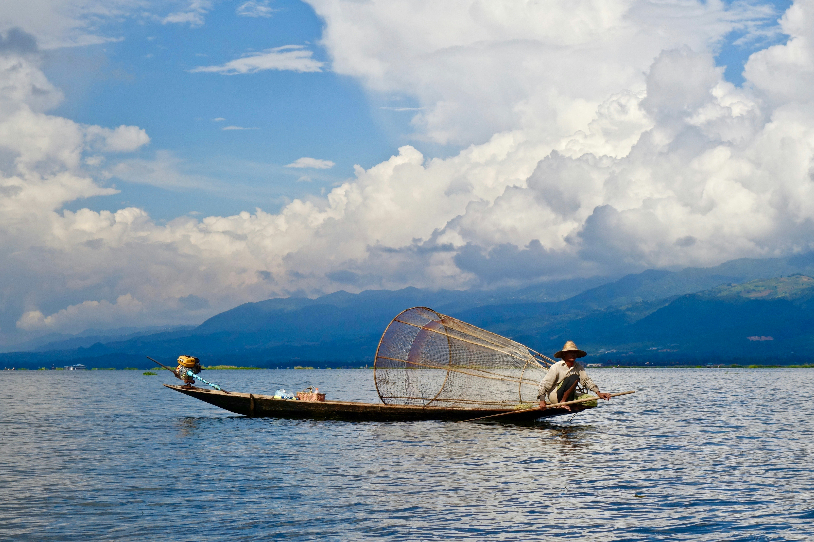

Visit Myanmar
Discover culture, history, and beautiful landscapes in one of Southeast Asia’s most unique destinations.
Top three places to visit in Myanmar

Bagan temples at sunrise
Bagan is one of the most breathtaking historical sites in the world. With thousands of ancient temples spread across the plains, visitors can enjoy stunning sunrise and sunset views while exploring Myanmar’s rich history and culture.

Shwedagon Pagoda in Yangon
The Shwedagon Pagoda is the most sacred Buddhist site in Myanmar. Covered in gold and shining brightly at sunset, it is a powerful spiritual landmark and a must-visit destination in Yangon.

Inle Lake fisherman rowing boat
Inle Lake is famous for its floating villages, gardens, and unique fishermen who row their boats using one leg. Visitors can take boat tours and experience the peaceful culture of Shan State.